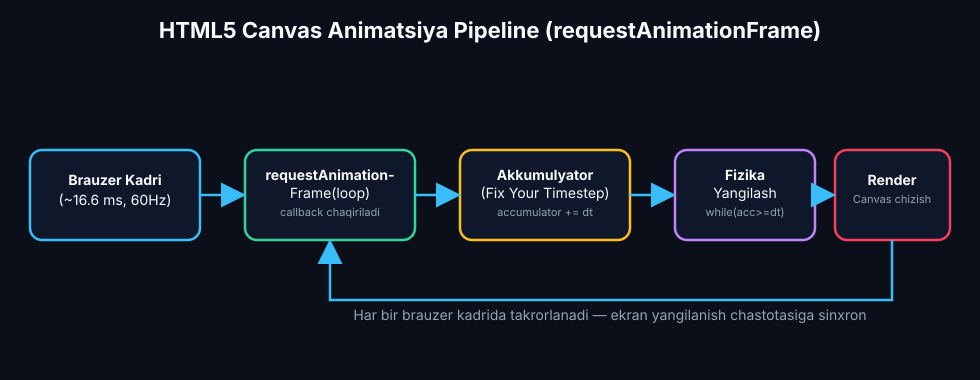
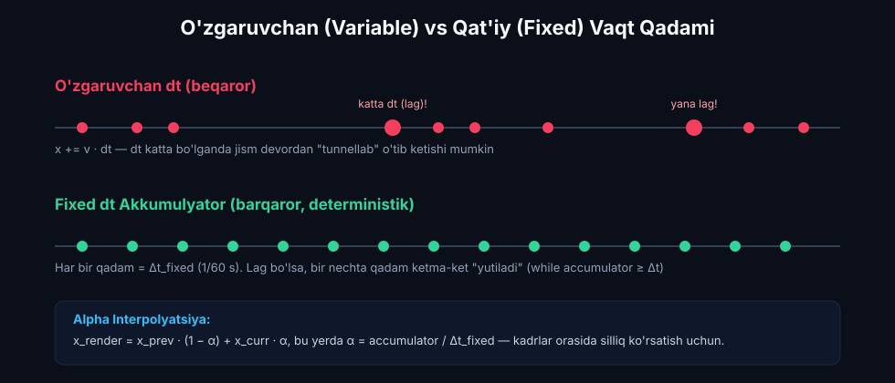
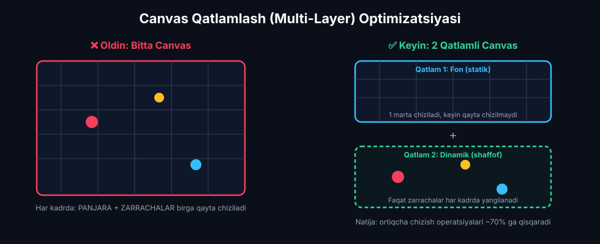
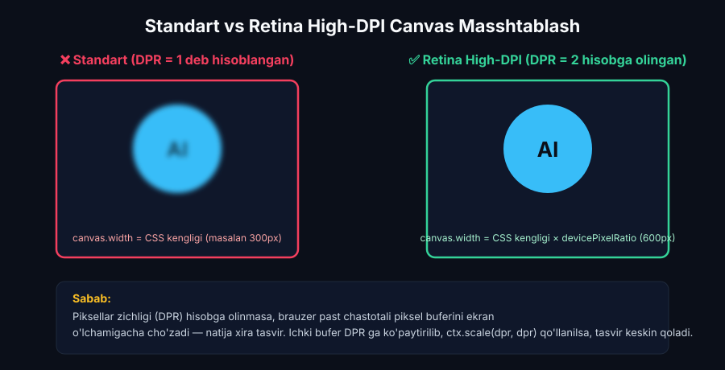

Fizik Animatsiya Arxitekturasi: HTML5 Canvas Asoslari
HTML5 Canvas 2D konteksti, Glenn Fiedlerning "Fix Your Timestep" akkumulyatorli fizik tsikli, requestAnimationFrame apparat sinxronizatsiyasi, Google Antigravity AI monitoringi, ChatGPT kadr optimizatsiyasi (Dirty Rects, Multi-layer Canvas, Object Pooling) va Claude 3.5 Sonnet (Artifacts) vizual sinovlari.
📋 7-Ma'ruza Rejasi va AI Texnologik Konveyeri:
MagicSchool AI: ZPD va Bloom taksonomiyasi bo'yicha 3 klasterli adaptiv grafik o'quv rejasi.
Google Antigravity AI: Modulli dasturiy arxitektura, xotira (Heap) va kadr pacing monitoringi.
Claude 3.5 Sonnet: Glenn Fiedler akkumulyatori, qat'iy qadam (Fixed dt) va alpha interpolyatsiyasi.
ChatGPT Code Interpreter: Dirty Rectangles, ko'p qatlamli Canvas va Object Pooling (Zero-GC).
Claude 3.5 Sonnet (Artifacts): Retina High-DPI dpr masshtablash, real vaqtli FPS va jank telemetriyasi.
HTML5 Canvas jonli arxitektura dvigateli, lag-simulyator, diagnostik test va adabiyotlar.
MagicSchool AI: Kognitiv Diagnostika va 3 Klasterli Adaptiv O'quv Rejasi
Grafik va kompyuter fizikasi ta'limida talabalarning animatsiya mexanikasini o'zlashtirishi Lev Vygotskiyning "Eng Yaqin Rivojlanish Zonasi" (ZPD, 1978) hamda Bloomning taksonomiyasi (Anderson & Krathwohl, 2001) prinsiplari asosida tashkil etiladi. Dasturiy grafik apparat bilan ishlash tajribasi turli darajadagi talabalarni MagicSchool AI diagnostikasi orqali 3 ta ixtisoslashgan klasterga ajratadi.
HTML5 Canvas fizik simulyatsiyalarini yaratishda oddiy rasm chizishdan tashqari kadrlar yangilanishi chastotasi (FPS), kompyuter monitorlarining V-Sync xususiyatlari (60Hz, 120Hz, 144Hz) va vaqt diskretizatsiyasi hisobga olinishi lozim. Talabalar bilimi quyidagi 3 klasterga ajratiladi:
Klaster A (Boshlang'ich)
ScaffoldingHTML5 Canvas 2D kontekstini biladi (`ctx.fillRect`, `ctx.arc`), biroq `requestAnimationFrame` va `setInterval` o'rtasidagi fundamental farqni tushunmaydi. O'zgaruvchan delta-time xatolariga yo'l qo'yadi.
Klaster B (O'rta / Standart)
Dvigatel QuruvchiDelta-Time ($\Delta t$) tushunchasini to'liq tushunadi. JavaScript ES6+ sintaksisiga ega. Monitor chastotasining (60Hz / 144Hz) fizik tezlikka ta'sirini anglaydi.
Klaster C (Ilg'or / Research)
TadqiqotchiXotira boshqaruvi, Garbage Collection (GC) pauzalari, Web Workers va OffscreenCanvas ko'p oqimli arxitekturasi bilan tanish.
🗺️ 4 Haftalik Adaptiv Canvas Arxitekturasi Yo'l Xaritasi:
| Bosqich | Hafta | Klaster A (Boshlang'ich) | Klaster B (Standart) | Klaster C (Ilg'or) | Baholash Mezonlari |
|---|---|---|---|---|---|
| 1-Hafta | Canvas Asoslari & rAF | Canvas 2D primitivlari va oddiy `requestAnimationFrame` tsikli | Delta-Time hisobi va fizik tezlikni vaqtga bog'lash | Retina High-DPI masshtablash va sub-pixel tekislash | Kadrlar silliqligi (60 FPS) |
| 2-Hafta | Akkumulyator & Barqarorlik | O'zgaruvchan dt muammolarini (Tunneling) kuzatish | Glenn Fiedler "Fix Your Timestep" akkumulyatorini joriy etish | Spiral of Death himoyasi va Alpha interpolyatsiyasi | Fizik determinizm (100%) |
| 3-Hafta | Optimizatsiya & Xotira | Kadrni tozalash va to'qnashuvlar chegarasi | Object Pooling joriy etib, GC mikro-pauzalarini yo'qotish | Dirty Rectangles va Multi-layer Canvas arxitekturasi | Jank kadrlar soni (< 1%) |
| 4-Hafta | Capstone & Telemetriya | 50 ta elastik to'p simulyatsiyasini yig'ish | Real vaqtli FPS/Frame Pacing HUD telemetriyasini qurish | OffscreenCanvas Web Worker ko'p oqimli dvigatelini himoya qilish | Akademik loyiha himoyasi |
Google Antigravity AI: Dastur Arxitekturasi va Resurs Monitoringi
Zamonaviy kompyuter grafikasi va interaktiv tizimlar arxitekturasi qat'iy komponentli modullashuvni talab etadi (Gregory, J., 2018, Game Engine Architecture, 3rd Ed., CRC Press). Google Antigravity AI agentik tizimi loyiha kodining modulliligini, xotira sarfini (Heap Profiling) va kadrlar barqarorligini avtomatlashtirilgan tarzda kuzatib boradi.
Fizik modellashtirish kodida fizik hisoblar va vizual renderlash qat'iy ajratilishi (Decoupling) zarur. Google Antigravity AI quyidagi 4 ta asosiy quyi tizimni shakllantiradi:
🏗️ Modulli Dasturiy Quyi Tizimlar:
- 1. CoreEngine (Bosh Boshqaruvchi): Kadrlar tsikli (`loop`), vaqt hisobi (`performance.now()`) va holatlar mashinasi (Play, Pause, Reset, Step).
- 2. PhysicsSubsystem (Fizik Quyi Tizim): Qat'iy qadamli integrator ($\Delta t_{\text{fixed}} = 1/60\text{ s}$), kuchlar yig'indisi, Nyuton mexanikasi va to'qnashuvlar.
- 3. RenderSubsystem (Grafik Tizim): Canvas 2D kontekstida alpha-interpolyatsiya bilan chizish, Retina High-DPI masshtablash.
- 4. TelemetryHUD (Monitoring): Real vaqtli FPS, Frame Time, Jank kadrlari va xotira monitoringi.
📊 Animatsiya Konveyeri (Pipeline)

🛡️ Antigravity AI Resurs va Xotira Monitoringi Qoidalari:
60 FPS barqarorligi uchun kadrning umumiy vaqti (Fizika + Render) $16.66\text{ ms}$ dan oshmasligi shart.
Animatsiya tsikli ichida yangi massivlar yoki obyektlar yaratilmasligi, xotira sarfi gorizontal to'g'ri chiziq bo'lishi lozim.
Agar kadr vaqti $33.3\text{ ms}$ dan oshsa, Antigravity AI monitoringi avtomatik qizil ogohlantirish qayd etadi.
Glenn Fiedler "Fix Your Timestep" Akkumulyatori va Delta-Time Integratsiyasi
Interaktiv fizik tizimlarda vaqtni qat'iy diskretlash konsepsiyasi Glenn Fiedler (2004, "Fix Your Timestep!", Gaffer on Games) tomonidan asoslab berilgan. Ushbu algoritm fizik dvigatel hisob-kitoblarini apparat monitorining yangilanish chastotasidan to'liq ajratadi va simulyatsiyaning deterministik barqarorligini ta'minlaydi.
Oddiy o'zgaruvchan vaqt qadami (`x += v * dt`) qo'llanilganda, kompyuterdagi tasodifiy kechikish (lag) vaqtida $dt$ kattalashib, jismlar devor ichidan o'tib ketadi (Tunneling effekti) yoki tizim energiyasi portlaydi. Glenn Fiedler akkumulyatori bu muammoni to'liq hal qiladi:

📐 Matematik Apparat va Algoritm:
1. Vaqt to'plash (Accumulator): $$\text{accumulator} \mathrel{+}= \min(\Delta t_{\text{frame}}, 0.25)$$ (0.25 s chegarasi "O'lim spirali" — Spiral of Death ning oldini oladi).
2. Qat'iy qadamlar bilan yutish (Consumption): $$\text{while } (\text{accumulator} \ge \Delta t_{\text{fixed}}) \implies \begin{cases} \text{updatePhysics}(\Delta t_{\text{fixed}}) \\ \text{accumulator} \mathrel{-}= \Delta t_{\text{fixed}} \end{cases}$$
3. Alpha Holat Interpolyatsiyasi: $$\alpha = \frac{\text{accumulator}}{\Delta t_{\text{fixed}}}, \quad x_{\text{render}} = x_{\text{prev}}(1 - \alpha) + x_{\text{curr}}\alpha$$
🛡️ Claude 3.5 Sonnet tomonidan Ishlab Chiqilgan Tsikl:
let accumulator = 0;
const fixedDelta = 1 / 60;
function loop(currentTime) {
let frameTime = (currentTime - lastTime) / 1000;
lastTime = currentTime;
if (frameTime > 0.25) frameTime = 0.25;
accumulator += frameTime;
while (accumulator >= fixedDelta) {
physics.update(fixedDelta);
accumulator -= fixedDelta;
}
const alpha = accumulator / fixedDelta;
render(alpha);
requestAnimationFrame(loop);
}
Kadr Chastotasi Optimizatsiyasi: ChatGPT Code Interpreter Tahlili
MDN Web Docs (2024, Optimizing HTML5 Canvas) hamda W3C HTML5 2D Canvas Context standartlariga muvofiq, yuqori zichlikdagi zarrachalar simulyatsiyasida kadr tushib ketishi (Frame Drop) CPU va GPU o'rtasidagi ma'lumotlar o'tkazuvchanligi va Garbage Collection (GC) to'xtalishlari tufayli sodir bo'ladi.

1. Object Pooling (Zero-GC)
Animatsiya tsikli ichida har bir kadrda new Vector() yoki yangi zarracha yaratish qat'iyan man etiladi. Obyektlar massivdan olinadi va qaytariladi, bu GC mikro-pauzalarini 0 ga tushiradi.
2. Multi-layer Canvas (Qatlamlash)
Statik fon panjara chiziqlari pastki Canvas qatlamiga 1 marta chiziladi. Dinamik zarrachalar esa ustki shaffof qatlamda yangilanadi. Ortiqcha chizishlar 70% ga qisqaradi.
3. Butun Sonli Koordinatalar
Kasr koordinatalar (masalan, 14.73px) brauzerni qimmat anti-aliasing hisoblariga majbur qiladi. Koordinatalarni (x | 0) yoki Math.round orqali yaxlitlash kadr tezligini 20% oshiradi.
Claude 3.5 Sonnet (Artifacts): Retina High-DPI Masshtablash va Vizual Sinov
Zamonaviy mobil va noutbuk ekranlarida piksellar zichligi koeffitsienti Device Pixel Ratio ($DPR \ge 2$) ga teng. Standart Canvas piksel buferi o'lchami CSS o'lchamiga teng bo'lsa, tasvir 4 barobar xiralashadi. Claude 3.5 Sonnet Artifacts muhitida ushbu muammo dinamik piksellar adapteri orqali bartaraf etiladi.
📱 Retina High-DPI Adapter Kodi:
const dpr = window.devicePixelRatio || 1;
const rect = canvas.getBoundingClientRect();
// 1. Ichki piksel buferini kengaytirish:
canvas.width = rect.width * dpr;
canvas.height = rect.height * dpr;
// 2. Grafik kontekstni masshtablash:
ctx.scale(dpr, dpr);
// 3. CSS o'lchamini mustahkamlash:
canvas.style.width = `${rect.width}px`;
canvas.style.height = `${rect.height}px`;
}
🔍 Standart vs Retina High-DPI Sifat

Interaktiv Canvas Fizik Animatsiya Arxitekturasi Laboratoriyasi
🎛️ Dvigatel Rejimlari va Parametrlar:
📊 Real Vaqtli Telemetriya (HUD):
60 FPS
60 Hz
16.6 ms
0.0 ms
1
0
7-Modul Diagnostika Testi (3 ta Ilmiy Savol)
HTML5 Canvas fizik animatsiya arxitekturasi, delta-time va kadrlar optimizatsiyasi bo'yicha bilimlaringizni sinab ko'ring:
1-Savol: Glenn Fiedlerning "Fix Your Timestep" akkumulyatorli arxitekturasida nima sababdan fizik qadam $\Delta t_{\text{fixed}} = 1/60\text{ s}$ qat'iy saqlanadi?
2-Savol: Yuqori yuklamali HTML5 Canvas animatsiyalarida Object Pooling (Obyektlar Havzasi) qo'llashning asosiy maqsadi nima?
3-Savol: Retina va HiDPI ekranlarda (Device Pixel Ratio $DPR \ge 2$) Canvas elementining xiralashib qolmasligi uchun qanday chora ko'riladi?
📚 7-Modul Bo'yicha Ilmiy-Uslubiy Adabiyotlar Ro'yxati:
- Fiedler, G. (2004). Fix your timestep! Gaffer on Games. (Physics loop decoupling and accumulator algorithms).
- Gregory, J. (2018). Game Engine Architecture (3rd ed.). CRC Press. (Game loop architecture, frame pacing, fixed vs variable timesteps).
- Mozilla Developer Network (MDN). (2024). Optimizing Canvas Performance. MDN Web Docs.
- W3C. (2023). HTML Canvas 2D Context Specification. World Wide Web Consortium.
- Anderson, L. W., & Krathwohl, D. R. (2001). A Taxonomy for Learning, Teaching, and Assessing. Longman.
- Vygotsky, L. S. (1978). Mind in Society: The Development of Higher Psychological Processes. Harvard University Press.
- Hairer, E., Lubich, C., & Wanner, G. (2006). Geometric Numerical Integration: Structure-Preserving Algorithms. Springer.
- Halliday, D., Resnick, R., & Walker, J. (2018). Fundamentals of Physics (11th ed.). Wiley.